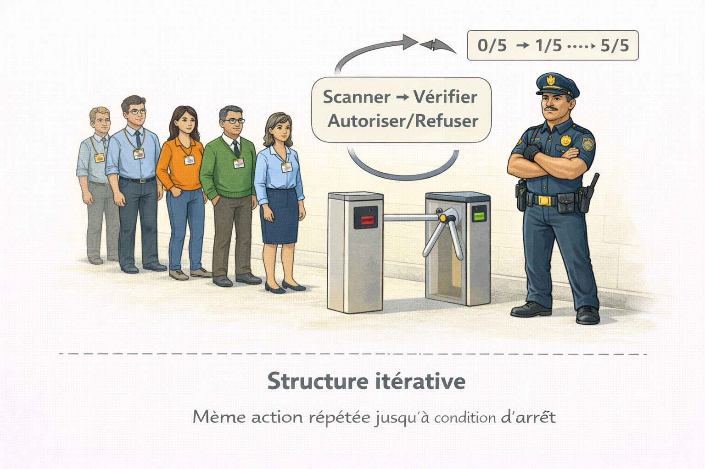
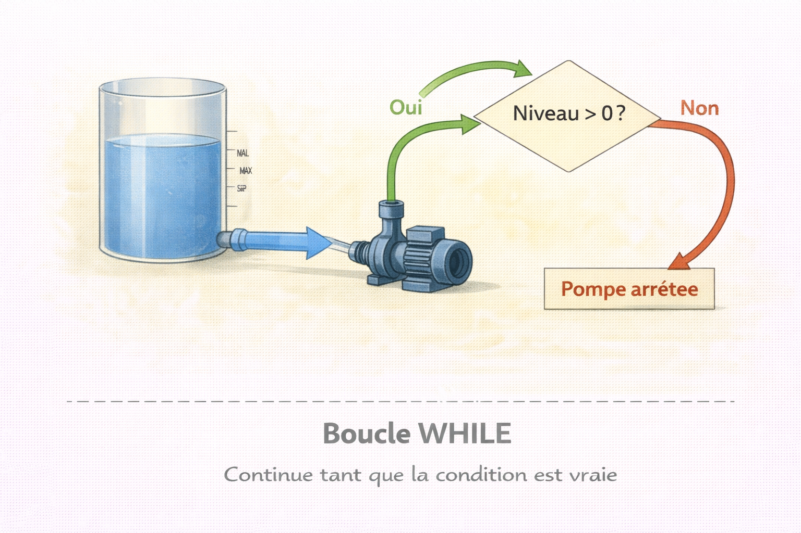
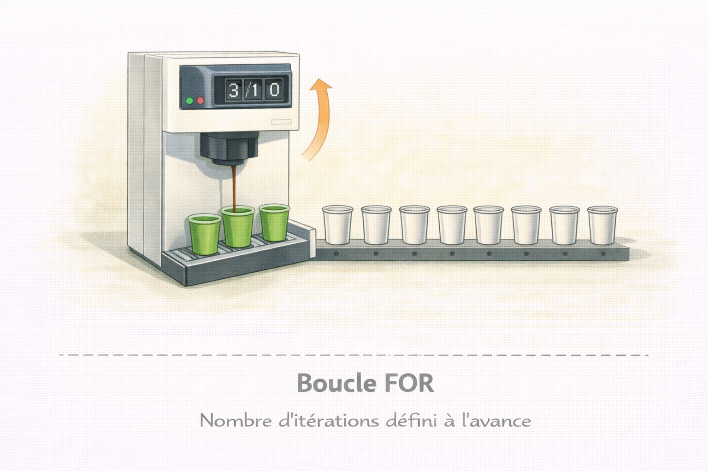
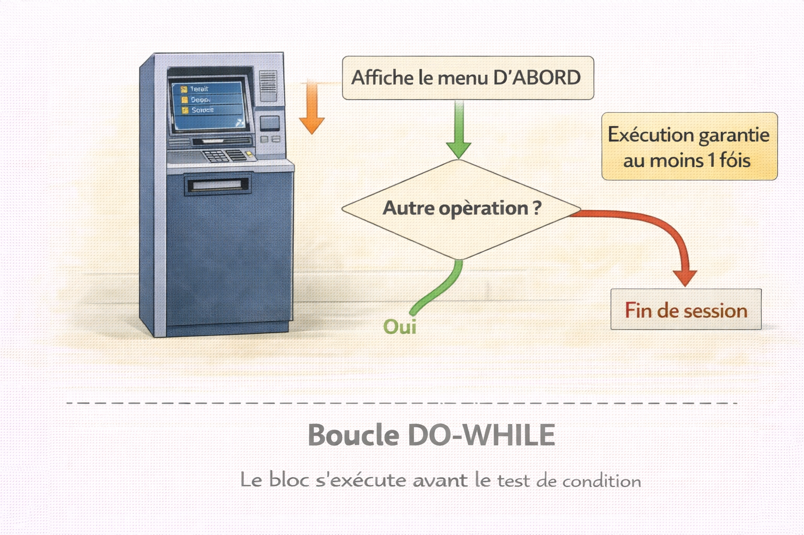
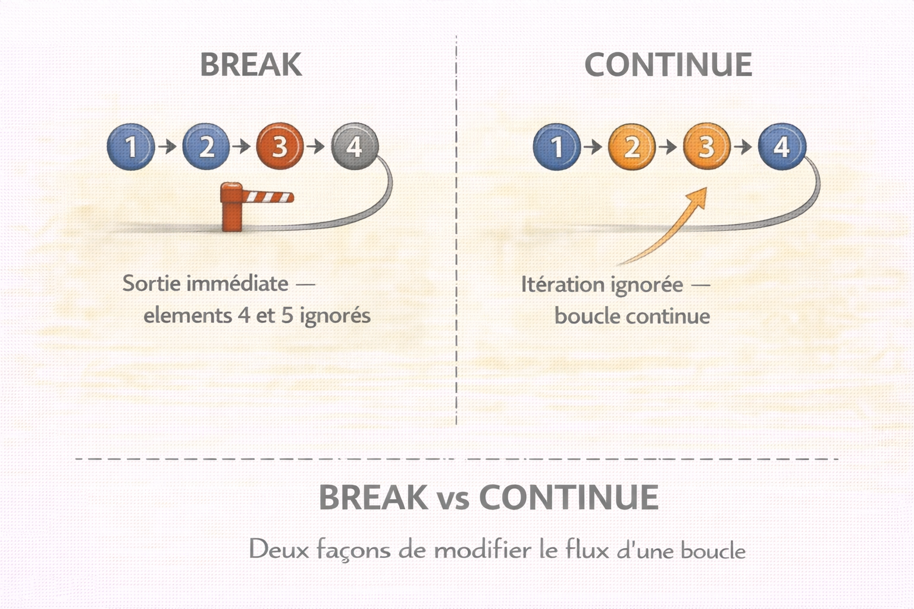

Structures Itératives¶
Analogie
Un agent de sécurité vérifie chaque badge d'une file de cent personnes. Il répète exactement la même vérification pour chacune : scanner le badge, vérifier le code, autoriser ou refuser l'accès. Il ne s'arrête que lorsque la file est vide. C'est exactement ce que font les structures itératives : répéter des instructions jusqu'à ce qu'une condition d'arrêt soit satisfaite.
Les types primitifs constituent les briques de base des données, la mémoire les organise entre Stack et Heap, la logique booléenne évalue des conditions, la logique conditionnelle décide quelle action exécuter. Les structures itératives représentent l'étape suivante : elles ajoutent la capacité de répétition. Une structure itérative exécute un bloc d'instructions de manière répétée tant qu'une condition reste vraie ou jusqu'à ce qu'elle devienne fausse. Cette capacité transforme des séquences linéaires en systèmes capables de traiter des volumes massifs de données.
Pourquoi c'est important
Les structures itératives permettent le traitement de collections de données, l'automatisation de tâches répétitives, l'analyse de logs système et la mise en œuvre d'algorithmes de recherche et de tri. Sans elles, chaque répétition devrait être écrite manuellement — impossible à l'échelle.
Cette fiche fait suite à la Logique Conditionnelle. Les structures itératives combinent directement les concepts booléens et conditionnels — leur maîtrise est un prérequis absolu pour comprendre comment et quand une boucle s'arrête.
L'image ci-dessous illustre concrètement ce qu'est une structure itérative avant d'aborder la syntaxe. Visualiser la répétition comme un processus physique aide à comprendre pourquoi une condition d'arrêt est indispensable.

L'agent répète exactement la même séquence d'actions pour chaque personne dans la file. Le compteur progresse à chaque itération — 0/5, 1/5, jusqu'à 5/5. Quand la file est vide, la condition d'arrêt est atteinte et le processus se termine. Un programme itératif fonctionne selon ce même principe.
Les trois structures fondamentales¶
Trois structures couvrent tous les scénarios de répétition rencontrables dans un programme.
| Structure | Quand l'utiliser | Caractéristique distinctive |
|---|---|---|
| WHILE | Nombre d'itérations inconnu | Teste la condition avant chaque itération |
| FOR | Nombre d'itérations connu ou séquence définie | Syntaxe compacte — initialisation et incrémentation intégrées |
| DO-WHILE | Au moins une exécution garantie | Teste la condition après chaque itération |
Go — une seule boucle pour tout
Go ne dispose que de la boucle for, utilisée pour tous les cas de figure : boucle comptée, boucle conditionnelle (équivalent WHILE) et boucle infinie. C'est un choix délibéré de simplicité — une seule syntaxe à maîtriser, aucune ambiguïté.
Structure WHILE¶
La boucle WHILE exécute son bloc d'instructions tant que la condition d'entrée est vraie. Elle s'arrête dès que cette condition devient fausse. La condition est vérifiée avant chaque itération.
Analogie
Une pompe qui vide un réservoir. Elle continue de pomper tant que le niveau d'eau dépasse zéro. Dès que le réservoir est vide, la pompe s'arrête automatiquement.
L'image ci-dessous matérialise le cycle vérification → exécution → retour de la boucle WHILE. Comprendre que la condition est évaluée avant chaque passage est ce qui distingue WHILE de DO-WHILE.

La pompe ne s'enclenche que si le niveau d'eau dépasse zéro — vérification avant l'action. Après chaque pompage, le niveau baisse et la condition est réévaluée. Si le réservoir est déjà vide à l'entrée, la pompe ne démarre jamais. C'est exactement le comportement de la boucle WHILE.
Schéma du mécanisme WHILE¶
flowchart TD
A["Programme en cours"] --> B["Entrée dans la boucle WHILE"]
B --> C{"Test de condition<br />AVANT l'itération"}
C -->|"Condition VRAIE"| D["Exécuter le bloc d'instructions"]
D --> E["Modifier les variables de contrôle"]
E --> C
C -->|"Condition FAUSSE"| F["Sortie de la boucle"]
F --> G["Continuer le programme"]La condition est systématiquement évaluée avant chaque itération potentielle. Si elle est vraie, le bloc s'exécute puis le contrôle retourne à la vérification. Si elle est fausse dès le départ, le bloc ne s'exécute jamais.
Exemples par langage¶
# Vérification séquentielle de badges
compteur = 0
badges_a_verifier = 5
while compteur < badges_a_verifier:
print(f"Vérification du badge numéro {compteur + 1}")
# Action : scanner et valider le badge
compteur += 1 # Modification de la variable de contrôle — indispensable
print("Tous les badges ont été vérifiés")
// Traitement de requêtes en attente
let requetesEnAttente = 10;
while (requetesEnAttente > 0) {
console.log(`Traitement de la requête, reste ${requetesEnAttente}`);
// Action : traiter une requête
requetesEnAttente--; // Décrémentation — condition tendra vers false
}
console.log('Toutes les requêtes ont été traitées');
package main
import "fmt"
func main() {
// Go utilise for sans initialisation ni incrémentation — équivalent WHILE
connexionsActives := 15
for connexionsActives > 0 {
fmt.Printf("Surveillance de %d connexions\n", connexionsActives)
// Action : vérifier l'état de chaque connexion
connexionsActives--
}
fmt.Println("Toutes les connexions ont été fermées")
}
Risque de boucle infinie
Si la condition de la boucle WHILE ne devient jamais fausse, le programme tourne indéfiniment. Les instructions à l'intérieur de la boucle doivent toujours modifier les variables testées dans la condition pour garantir une terminaison.
Structure FOR¶
La boucle FOR est adaptée aux itérations sur des séquences définies ou lorsque le nombre d'itérations est connu à l'avance. Elle regroupe l'initialisation, la condition et l'incrémentation dans une syntaxe compacte.
Analogie
Un distributeur automatique qui sert exactement dix gobelets de café. Compteur initialisé à zéro, incrémenté après chaque gobelet, arrêt précis à dix.
L'image ci-dessous illustre pourquoi FOR est préférable à WHILE quand le nombre d'itérations est connu. Voir le compteur progresser et les emplacements se remplir un par un rend le mécanisme immédiatement concret.

Le distributeur connaît exactement combien de gobelets il doit servir. Le compteur s'incrémente automatiquement après chaque gobelet. À 10/10, la boucle s'arrête sans condition externe à surveiller. C'est l'avantage de FOR sur WHILE : l'initialisation, la condition et l'incrémentation sont gérées en un seul endroit.
Schéma du mécanisme FOR¶
flowchart TD
A["Programme en cours"] --> B["Entrée dans la boucle FOR"]
B --> C["Initialisation de la variable de contrôle<br />(une seule fois)"]
C --> D{"Test de condition<br />AVANT l'itération"}
D -->|"Condition VRAIE"| E["Exécuter le bloc d'instructions"]
E --> F["Incrémentation automatique<br />de la variable de contrôle"]
F --> D
D -->|"Condition FAUSSE"| G["Sortie de la boucle"]
G --> H["Continuer le programme"]L'initialisation survient une seule fois au démarrage. Ensuite : vérification de condition → exécution → incrémentation, jusqu'à ce que la condition devienne fausse.
Exemples par langage¶
package main
import "fmt"
func main() {
// For classique — compteur explicite
for i := 0; i < 5; i++ {
fmt.Printf("Itération %d\n", i+1)
}
// For avec range — parcours de collection
utilisateurs := []string{"Alice", "Bob", "Charlie"}
for index, nom := range utilisateurs {
fmt.Printf("Vérification de l'utilisateur %d : %s\n", index+1, nom)
// Action : valider les permissions
}
fmt.Println("Vérification complète")
}
Structure DO-WHILE¶
La boucle DO-WHILE garantit au moins une exécution de son bloc avant de vérifier la condition de continuation. La condition est vérifiée après chaque itération.
Analogie
Un distributeur de billets qui affiche toujours son menu principal au moins une fois, puis demande si une autre opération est souhaitée. Même sans rien à faire, le menu s'affiche obligatoirement.
L'image ci-dessous met en évidence l'inversion du flux par rapport à WHILE. Voir que l'action précède le test — et non l'inverse — est la distinction fondamentale qu'il faut retenir entre ces deux structures.

Le menu s'affiche d'abord, sans condition préalable. Ce n'est qu'après que la question "Autre opération ?" est posée. Si la réponse est non, la boucle s'arrête. Si la réponse est oui, le menu s'affiche à nouveau. L'exécution est garantie au moins une fois — même si la condition aurait été fausse dès le départ.
Schéma du mécanisme DO-WHILE¶
flowchart TD
A["Programme en cours"] --> B["Entrée dans la boucle DO-WHILE"]
B --> C["Exécuter le bloc d'instructions<br />SANS test préalable"]
C --> D["Modifier les variables de contrôle"]
D --> E{"Test de condition<br />APRÈS l'itération"}
E -->|"Condition VRAIE"| C
E -->|"Condition FAUSSE"| F["Sortie de la boucle"]
F --> G["Continuer le programme"]Le bloc s'exécute inconditionnellement en premier. La condition n'est évaluée qu'après pour décider si une nouvelle itération est nécessaire.
Exemples par langage¶
# Python n'a pas de do-while natif — simulation avec while True + break
choix = ""
while True:
print("Menu : 1-Connexion, 2-Inscription, 3-Quitter")
choix = input("Votre choix : ")
# Action : traiter le choix
if choix == "3":
break # Condition de sortie évaluée après exécution
print("Au revoir")
Python — absence volontaire du do-while
Python ne dispose pas de do-while par choix de conception. La simulation avec while True + break est l'approche idiomatique — explicite et lisible.
// Menu interactif garantissant au moins un affichage
let continuer = false;
do {
console.log('Configuration du système de sécurité');
console.log('1. Modifier le mot de passe');
console.log('2. Configurer l\'authentification 2FA');
// Action : traiter le choix
continuer = confirm('Continuer la configuration ?');
} while (continuer);
console.log('Configuration terminée');
<?php
// Saisie avec validation obligatoire — au moins une tentative garantie
do {
echo "Entrez votre mot de passe : ";
$mot_de_passe = "user_input"; // Simulation
// Action : valider le mot de passe
$valide = strlen($mot_de_passe) >= 8;
if (!$valide) {
echo "Mot de passe trop court, recommencez\n";
}
} while (!$valide);
echo "Mot de passe accepté\n";
?>
package main
import "fmt"
func main() {
// Go n'a pas de do-while natif — simulation avec for infini + break
var reponse string
for {
fmt.Println("Voulez-vous continuer ? (oui/non)")
fmt.Scanln(&reponse)
// Action : traiter la réponse
if reponse == "non" {
break // Condition évaluée après exécution
}
}
fmt.Println("Programme terminé")
}
Go — for infini comme do-while
for { ... } sans condition crée une boucle infinie. Combiné à break, il simule exactement le comportement do-while — exécution garantie au moins une fois, sortie conditionnelle.
Instructions de contrôle¶
Les instructions BREAK et CONTINUE modifient le flux d'exécution normal à l'intérieur d'une boucle.
L'image ci-dessous présente les deux comportements côte à côte. Les visualiser simultanément permet de comprendre immédiatement la différence : BREAK sort de la boucle, CONTINUE saute une itération mais maintient la boucle active.

BREAK (gauche) : dès que la condition est rencontrée au troisième élément, la boucle s'arrête complètement — les éléments 4 et 5 ne sont jamais traités. CONTINUE (droite) : le troisième élément est ignoré mais la boucle reprend immédiatement au quatrième — les éléments 4 et 5 sont bien traités.
Instruction BREAK — sortie immédiate¶
flowchart TB
A["Dans une boucle<br />itération en cours"] --> B{"Condition<br />nécessitant BREAK ?"}
B -->|"OUI"| C["Exécution de BREAK"]
C --> D["Sortie IMMÉDIATE<br />de la boucle"]
D --> E["Continuer après la boucle"]
B -->|"NON"| F["Continuer l'itération<br />normalement"]
F --> G["Retour au test de<br />condition de la boucle"]# Recherche d'un élément suspect dans des logs
logs = ["INFO", "DEBUG", "INFO", "ERROR", "WARNING"]
for index, niveau in enumerate(logs):
print(f"Analyse du log {index + 1} : {niveau}")
if niveau == "ERROR":
print(f"Erreur critique détectée au log {index + 1}")
break # Inutile de continuer — traitement prioritaire requis
print("Analyse terminée")
// Recherche d'utilisateur — s'arrête dès qu'il est trouvé
const utilisateurs = ['Alice', 'Bob', 'Charlie', 'David'];
const recherche = 'Charlie';
let trouve = false;
for (let i = 0; i < utilisateurs.length; i++) {
console.log(`Vérification : ${utilisateurs[i]}`);
if (utilisateurs[i] === recherche) {
console.log(`Utilisateur ${recherche} trouvé !`);
trouve = true;
break; // Inutile de parcourir le reste
}
}
if (!trouve) {
console.log('Utilisateur non trouvé');
}
<?php
// Détection de tentative d'intrusion — alerte sur première IP suspecte
$connexions = [
["ip" => "192.168.1.10", "tentatives" => 2],
["ip" => "10.0.0.5", "tentatives" => 15],
["ip" => "192.168.1.20", "tentatives" => 1]
];
foreach ($connexions as $connexion) {
echo "Vérification de {$connexion['ip']}\n";
if ($connexion['tentatives'] > 10) {
echo "ALERTE : Tentatives suspectes depuis {$connexion['ip']}\n";
break; // Arrêt immédiat — traitement de l'alerte prioritaire
}
}
echo "Vérification de sécurité terminée\n";
?>
package main
import "fmt"
func main() {
// Recherche de port ouvert — s'arrête au premier trouvé
ports := []int{21, 22, 23, 80, 443}
for _, port := range ports {
fmt.Printf("Test du port %d\n", port)
if port == 80 {
fmt.Println("Port HTTP trouvé !")
break // Recherche terminée
}
}
fmt.Println("Scan terminé")
}
Instruction CONTINUE — saut d'itération¶
flowchart TB
A["Dans une boucle<br />itération en cours"] --> B{"Condition<br />nécessitant CONTINUE ?"}
B -->|"OUI"| C["Exécution de CONTINUE"]
C --> D["Ignore le reste<br />de l'itération actuelle"]
D --> E["Passe DIRECTEMENT<br />à l'itération suivante"]
E --> F["Test de condition<br />de la boucle"]
B -->|"NON"| G["Continuer l'itération<br />normalement jusqu'à la fin"]
G --> F# Traitement sélectif — connexions non autorisées ignorées
connexions = [
{"ip": "192.168.1.10", "autorisee": True},
{"ip": "10.0.0.5", "autorisee": False},
{"ip": "192.168.1.20", "autorisee": True}
]
for connexion in connexions:
if not connexion["autorisee"]:
print(f"IP {connexion['ip']} bloquée, ignorée")
continue # Passe à la connexion suivante sans traitement
print(f"Traitement de {connexion['ip']}")
# Action : traiter la connexion autorisée
// Filtrage de fichiers — seuls les .js sont analysés
const fichiers = ['doc.txt', 'image.png', 'script.js', 'photo.jpg'];
for (let fichier of fichiers) {
if (!fichier.endsWith('.js')) {
console.log(`${fichier} ignoré (pas un fichier JS)`);
continue; // Passe au fichier suivant
}
console.log(`Analyse de ${fichier}`);
// Action : analyser le fichier JavaScript
}
<?php
// Validation — champs optionnels vides ignorés
$champs = [
["nom" => "email", "valeur" => "user@example.com", "requis" => true],
["nom" => "telephone", "valeur" => "", "requis" => false],
["nom" => "nom", "valeur" => "", "requis" => true]
];
foreach ($champs as $champ) {
if (!$champ['requis'] && empty($champ['valeur'])) {
echo "Champ {$champ['nom']} optionnel vide, ignoré\n";
continue; // Passe au champ suivant
}
echo "Validation du champ {$champ['nom']}\n";
// Action : valider le champ
}
?>
package main
import (
"fmt"
"strings"
)
func main() {
// Analyse de logs — niveaux DEBUG ignorés
logs := []string{"INFO: Démarrage", "DEBUG: Variable X", "ERROR: Échec", "DEBUG: Trace"}
for _, log := range logs {
if strings.HasPrefix(log, "DEBUG") {
continue // Ignore les logs de debug — pas d'intérêt en production
}
fmt.Printf("Traitement: %s\n", log)
// Action : analyser le log important
}
}
Boucles imbriquées¶
Une boucle imbriquée contient une autre boucle à l'intérieur de son bloc. Cette structure permet de traiter des données multidimensionnelles ou d'effectuer des opérations combinatoires.
# Vérification de permissions : plusieurs utilisateurs × plusieurs ressources
utilisateurs = ["Alice", "Bob", "Charlie"]
ressources = ["Document1", "Document2", "Document3"]
for utilisateur in utilisateurs:
print(f"\nVérification des accès pour {utilisateur}")
for ressource in ressources:
print(f" - Contrôle d'accès à {ressource}")
# Action : vérifier les permissions
print("\nVérification complète")
// Analyse antivirus : plusieurs fichiers × plusieurs signatures
const fichiersAnalyses = ['file1.exe', 'file2.dll', 'file3.sys'];
const signaturesVirus = ['malware_A', 'malware_B', 'malware_C'];
for (let fichier of fichiersAnalyses) {
console.log(`\nAnalyse de ${fichier}`);
for (let signature of signaturesVirus) {
console.log(` - Comparaison avec ${signature}`);
// Action : comparer les signatures
}
}
console.log('\nAnalyse antivirus terminée');
<?php
// Rapport de connectivité : plusieurs serveurs × plusieurs services
$serveurs = ["Web", "Database", "Cache"];
$services = ["HTTP", "SSH", "MySQL"];
foreach ($serveurs as $serveur) {
echo "\nTest du serveur $serveur\n";
foreach ($services as $service) {
echo " - Vérification du service $service\n";
// Action : tester la connectivité
}
}
echo "\nRapport de connectivité terminé\n";
?>
package main
import "fmt"
func main() {
// Scan de plages IP : plusieurs réseaux × plusieurs hôtes
reseaux := []string{"192.168.1", "10.0.0"}
derniersOctets := []int{1, 2, 3}
for _, reseau := range reseaux {
fmt.Printf("\nScan du réseau %s.x\n", reseau)
for _, octet := range derniersOctets {
fmt.Printf(" - Test de %s.%d\n", reseau, octet)
// Action : ping de l'adresse IP
}
}
fmt.Println("\nScan réseau terminé")
}
Complexité des boucles imbriquées
Une boucle externe de N itérations contenant une boucle interne de M itérations exécute N × M opérations totales. Avec N=1000 et M=1000, c'est 1 000 000 d'opérations. Limiter l'imbrication à deux ou trois niveaux maximum.
Bonnes pratiques¶
# Variables et conditions nommées explicitement
utilisateurs_actifs = ["Alice", "Bob", "Charlie", "David"]
seuil_connexions = 100
for index, nom_utilisateur in enumerate(utilisateurs_actifs):
print(f"Analyse {index + 1}/{len(utilisateurs_actifs)}")
# Variables intermédiaires — intention lisible immédiatement
nombre_connexions = 85 # Simulation
depasse_seuil = nombre_connexions > seuil_connexions
if depasse_seuil:
print(f"Alerte : {nom_utilisateur} ({nombre_connexions} connexions)")
Quatre règles à appliquer systématiquement.
- Nommer explicitement les variables de boucle pour clarifier leur rôle.
- S'assurer que la condition de sortie peut effectivement être atteinte.
- Préférer FOR à WHILE quand le nombre d'itérations est connu.
- Ne jamais modifier la taille d'une collection pendant qu'on l'itère — comportements imprévisibles garantis.
Modification pendant l'itération
Ajouter ou supprimer des éléments dans une collection qu'on est en train de parcourir peut sauter des éléments ou provoquer des erreurs d'index difficiles à diagnostiquer.
Conclusion¶
Conclusion
Les structures itératives transforment les programmes en systèmes capables de traiter des volumes arbitraires de données. Au début, chaque condition de continuation demande une réflexion consciente. Avec la pratique, le choix de la structure optimale devient un réflexe.
Chaque boucle écrite représente une automatisation concrète. Plus ces structures sont maîtrisées, plus les algorithmes complexes deviennent accessibles.